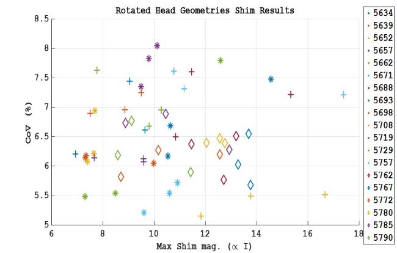

PROJECTS
1. On the requirements for a 'complete' dense transmission coil array for brain imaging at 7T
I am simulating surface loops of different radius and number on a fixed cylinder ignoring coupling in order to determine the tradeoff between homogeniety and element number.
The project aims to target an optimal number of Tx elements and build a dense coil array with RF shimming capabilities. The project also focuses finding an array that performs well across a patient population
rather than 1 model or generic models acceptable for safety measurements.

Figure 1: Simulated dense arrays shimmed over the Visible Human Project 1mm {x,y,z} resolution head model. The CoV (%) is the standard deviation of magnitude of the B1+ across the brain
divided by the mean of |B1+|. The maximum shim amplitude is the maximum A of the complex A*e^(i*theta) of the N (where N is the number of coils) shim weights.
A choice 256 element array can outperform a 480 element array when placed closer to the head (26.4 cm vs 26.4 cm diameter ).
The 480 element array was sub-sampled over each column and row to show the efficiency loss of lower element coils.
2. Defining intersubject variability: Safety and pulse sequence design differences across a large population in silico
Most systems rely on a safety factor {...really a fudge factor} that estimates Specific Absorption Rate for a patient in the scanner based on a generic model. A generic model is used since it is time consuming
to generate accurate models of patients and mapping the electric field let alone the B1+ field across anyone placed in the scanner. Currently, my group is generating a large library of accurately segmented
head models. Using these head models and commonly used coil designs in the commercially available software XFdtd (REMCOM). The differences in calculated SAR and B1+ sensitivity maps may be charecterized across a realistic
population of subjects. Along with this, questions concerning SARs correlation with relatively highly conductive CSF content or any other tissue in the head can be answered.

Figure 2: Rotating 20 head models within a coil 3 times for 60 data points. Each rotation was randomly selected between 0 and 5 degrees towards z+ or z-.
Rotation of 5 degrees can change shim performance.
Some Heads are cheaper to shim than others.
Optimized shims up to 3% variability in CoV.
Max current/element could vary by a factor of 2 between subjects.